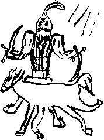

Her şey ağır, çok ağır hareket eden bir yaz günü rüyası gibiydi: İkindi güneşinin hafif yumuşak kızıllığı karşı tepeleri mor-mavi tonlara boyuyor, küçük karıncalar çalışkan çalışkan bir taraflara doğru koşturuyor, havada cırcırböceklerinin musikisi, ne hikmetse “Gidi Alaman Alaman yoktur sizinle viremiz” havası çalınıyor, bu vaveyla bile o tuhaf, derin, yapışkan sessizliği bozamıyor, zaman bir su damlası gibi musluktan kurtulmaya çalışıyor, uzuyor... uzuyor, o da sessizliği inşa eden aynı maddeden yapıldığı için bir türlü dökülüp, kendisini tutsak alan bu tunç borunun evreninden kurtulamıyor. Uzaklardaki yuvarlakça Alaman çadırları öfkeden sırtlarını kamburlaştırmış kediler gibi her an önlerindeki farelerin üzerine atlayacakmışçasına gergin duruyor, fakat toprak denen bu kan bataklığının kızıl, testilik çamuru onları da tutmuş bırakmıyor. Aynı büyülü hava yakınlara da bakınca görülüyor. Haç-Hilal Ovası’nın uykulu halinde uzak-yakın fark etmiyor.
İşte Osmanlı ordugâhının ordu bozan tüylü develeri uykulu uykulu esniyor, dağlıç ve karaman koyunları yağlı kuyruklarının üzerine oturmuş umursamaz bir eda ile kara gözlerine yeni sürmeler çekiyor (rüya bu!), upuzun ak sakallı, gulyabani heybetinde, bir fersah boyundaki bir Hwace, ağzında somuruk emip duran bir buçuk arşınlık beberuhi boyundaki Biçare Efendi’yi yakalamış, dizine oturtmuş bir şeyler söylüyor, yüz metre uzakta da olsalar Osman Hwace'sinin mukaddes bir edayla açılıp kapanan dudaklarını okuyabiliyor, bu ezeli ve ebedi sükût içinde Hwace’sinin insanın ruhuna işleyen tatlı sesini duyuyor:
“Arslanıma dedim ki, kaçılacak dem değildir... gayret eylen. Sonra ne yüzle payitahtta kullarınızın yüzüne bakarsız... Zaten haber aldım oraya da Basra üzerinden bir sıcak hava dalgası gelmiş. Gidip Bogaz’da ne edeceksiniz?”
Hiçbir şeyi kaçırmak istemeyen Biçare Efendi, el ayasına yerleştirdiği aharlı kâğıt üzerinde akan kamış kalemiyle bir karınca duası döktürüyor, mürekkebi bittikçe eğilip kalemini masmavi, koyu ve yapışkan şövalye kanma batırarak yazıyor ve yazıyor... O yazdıkça savaş meydanındaki karıncalar tek tek yakalanarak beyaz sayfalara hapsediliyor, Osman bu yazılanları istese mükemmelen okuyacağını biliyor.
Biraz sonra daha da yakınına bakıyor: Berke atının üzerine tünemiş, kafasına sarık takmış dev bir hankan kuşu suretinde... Kızıl şitah dikenlerinden oluşan sakallarında kazığa geçirilmiş küçük siyah gözlü kurtçuklar acı ile kıvranıyorlar... Bir kez daha bakıyor, Şeker Hami’nin, hemen ölmesin diye, sol değil de sağ göğsünden dikkatle bir dikene geçirilmiş olduğunu, yeşil gözleri ile yalvararak bu hengâme arasında “Osman beni kurtar” dediğini hissediyor.
Osman bu uzayıp da bir türlü düşemeyen su damlasının ta içinde olduklarını, o damlanın elastik ve şeffaf çeperleri tarafından tutsak alındıklarını biliyor, birazdan binlerce okun bu çeperleri deleceğini, damlanın düşeceğini, yüz binlerce zerreye ayrılarak yeryüzüne dağılacağını anlıyor.
Başarısız olmak üzere. Kapı açıldıkça açılıyor, içe veya dışa, fark etmez. Birazdan tarihin gördüğü en büyük katliamlardan birini göreceğini biliyor, üzülerek bakıyor, elinden hiçbir şey gelmeyeceğini ve kendisinin hiçbir şeye karışamayacağını zannediyor. Etrafındaki demir halka sıkmaya başlayınca Alaman ordusu da kuşatıldığını anlamış, dev bir tespihböceği gibi kıvrılmaya, top olmaya başlıyor. Alaman ordusu? Osman dikkatle bakıyor, bunlar, sayıları gaybubetleri sırasında inanılmaz artan kendi müteferrikaları! Ortalarına zavallı bohçacıları ve küçük, kara çıplak ayaklı, açık kıçlı yavruları almış, kılıçlarını çekmiş, gözleri kan çanağı, boyunlarında yağlı urganların kanlı izleri... Savunma tavrı alıyorlar, ellerinde ney, klarnet, darbuka, kudüm gibi zavallı aletleri ile Çingenelerden büyük yardım görüyorlar, kadınlar testilerini el humbarası gibi hazırlamış, vaveyla kopunca düşman üzerine atmaya... düşman?
Düşman kim? Biz miyiz? Kim zalim, kim mazlum, yoksa âlem kurulaldan bu destgâh böyle, hem zalim hem de mazlum muyuz? Nutfe-i Suat Ferid, Şeyh Osman Hulûsi Beyefendi Ağa’nın, bebekleri bile dağlar kadar ağırlık altında kalan gözlerinin yardımıyla, biraz puslu da olsa hadiseyi görüyor:
“Anette... Anette, ya Belçikalı değil de bunlar içinde bir çingene dilberiysen?”
Sonra kendisinden utanıyor, imgelem bir kez daha değişiyor:
“Ya çirkin, yaşlı bir bohçacı isen? Dilber olman şart mı Anette?..”
Ağlıyor, ağlıyor... Bir süre sonra Anette’e ağlamadığını, onun adını bahane ederek bu yığına ağladığını fark ediyor...
Sonra su damlası, aniden bir çığlık kopararak büyük tarraka ve cayırtılarla yırtıldı...
Cihan tepesinden tutuşmuş, yana yana devrilen ulu bir çam ağacı gibiydi. Ani bir yıldırım yemiş, bu yıldırımın şiddetinden bütün kabukları bedeninden soyulup, sökülüp atılmış, bembeyaz, utanılacak kadar çıplak, cascavlak kalmıştı. Yıldırım yüreğine kadar işlemiş, sonra geri dönüş yolunda içeriden dışarıya doğru bir hareket yaparak bu ağacın tüm yaş halkalarını ezmiş, kırmış, parçalamış, taraz taraz etmişti.
Katliam başlamıştı.
Osman bakmak, hele bundan sonrasını düşünmek bile istemiyordu. Bu kırım ve kıtâl sırasında, ağır, simsiyah burnundan bu yaz sıcağında bile buharlar çıkaran, bütün derisi beyaz köpük içinde bembeyaz bir savaş atı üzerinde, Alaman ordusu kumandanı General Yohan Zudrig Mars, saflar içinden çıkarak sultana doğru at sürdü. Bir yandan da haykırıyordu:
“Durdurun bu katliamı, er iseniz gelin benim ile dövüşün, sultanın atı ve kılıcı ile karşılaşmak isterim."
Şövalyelik yapmış, o şamata içinde bile dolaşık, dolambaçlı bir laf etmeyi becermişti. “Sultan gelsin" dese tahayyülat icabı Berke gitmek zorunda kalacak, büyük bir ihtimalle kaim bir bira sosisi gibi birkaç yerinden dilinecekti. Ama çağrılan o değildi ki! Sultan’ın atı ve kılıcı bu yiğitçe çağrıya cevap verdi. Demek Zudrig Mars, bir Utarid Zülfü değildi ve kendi canını(!) başkaları için tehlikeye atabiliyordu. Kalmuk Elçisi bu çağrıya yerleri eşerek, o da kendi burnundan dumanlar püskürterek cevap verdi. Bir Osmanlı atının savaş çağrısını reddettiği görülmemişti. Karşısındaki ak kısrağın geniş ve mebzûl Saksonyalı göğsüne sivri Kalmuk dişlerini gıcırdatarak iştahla baktı. Herhangi bir Osmanlı kılıcı değil, bütün bu memâliki fetheden –kadir bilmez sultanlara da yâr olmayan– kılıç, Osman Hulûsi’nin sağ eline kendisini yerleştirmiş, yeni meşe kabzasının bu demir pençe ile sarılıp sarmalanmasından mutlu, havada geniş daireler çiziyor, her dairede Osman’ın kulağına "Osman istediğin zaman şeninim, ben emanet değilim, sana verildim, unutma Osman!” diyordu. Birbirini kıran ve birinin ortadan ikiye biçilmesine ramak kalmış iki ordunun böyle birbirinden ayrılıp tek bir kavgayı seyre dalmaları pek görülmüş bir şey değildi, ama Alamanı Osmanlısı karmakarışık bu dövüşü seyre daldılar. Olayları sebepleriyle birlikte anlama ve tahlil işinde kötü, ama savaş sahnelerinde göz tanığı olma hasebiyle fena olmayan Biçare Efendi bu sahneyi söyle tasvir eder:
"Yiğitler yiğidi, gureba ağası, garibler babası, kalmış yiğit arkası, düşmüş yiğit ağıtçısı, zaman kitabının kâğıtçısı, gönüller sultanı, hal dili tercümanı Osman Ağa er meydanına öyle bir daldı ki Zudrig Kâfir sureta ‘behey bu koca yiğit kimdir, ben sizin o kerkenez kılıklı sultanınızı dilemişem’ diye biraz olmazlandı, çokça nazlandı ise de batında ‘ülen Zudrig, Mars’lık senin neyine behey teres, oturaydın evinde be adam Helga’nın kucağında, biranın başında kont kont! –essahtır, küffar inadından ‘paşa paşa’ demez– şimdi iki mars bir ters güle güle Ares’lik bir durum tebellür etti’ diye zâri zâri ağladı. Can buzağısını kaybetmiş camuşlar gibi karaları bağladı. Ares-i teres kâfirin kuyruğu olsa bacakları arasına kısıp sıvışacaktı ama olmadığı için, çarnaçar, uzun kalın gönderini koltuğun altına kıstı...”
“Efendim, nirede galmış idik?” (sevgili kariler burada O.F.M’ün Biçare Efendi ile üslup yarıştırdığı ve XVI. yüzyıl müverrihleri böyle konuşur diye sahte bir üslup edinerek hem discourse’u hem de narrative’i çalmaya kalkıştığı dikkatinizden kaçmamıştır diye umut ediyorum, rumuz MM).
Osman nasıl olup da kendisini meydanın ortasında bulduğunu bilmiyordu. Bir dört yüz yıl kadar sonra her ne hikmetse Berke’nin ruhunu pek iyi tanıyacak olan Nutfe-i Ferid’in, bu ani ortaya çıkışta, Berke’nin Kalmuk Elçisi’nin nazik bir tarafına, sağrısına, yakasında taşıdığı koca çuvaldızı haydahlamasmın âmil olduğu konusunda yemin billah etmesini her halükârda dikkate almalıdır.
Osman ile Zudrig iki ecel süvarisi gibi karşılaştılar. Osman yaklaşınca kılıcını çevirmeyi bıraktı, öne doğru tutarak karnına gömdüğü bir çelik mahmuz vasıtasıyla Kalmuk Elçisi’ne “daha hızlı lütfen” diye rica etti. Kalın tahtadan mamul şövalye gönderinden zerre kadar kaçmadı ve kılıcını yarım kıl sağa yarım kıl sola çevirerek gönderi sosis gibi dildi bıraktı. Zudrig gönderi son anda elinden atmayaydı, kolunun da böyle doğranacağını düşünerek titredi. Osman sonra, ani bir çark hareketi ile geri döndü, Saksonya’nın dilber kısrağı, almış ağır kıçını hâlâ diğer tarafa gidiyordu (orada mısınız Filiz Tomurcuk Hanım?, S.F.C.). Osman’ın da birtakım şövalyece aptallıkları vardı. İsterse arkalarından yetişip emekli bir savaş Tanrısının defterini anında dürebilirdi, ama yapmadı. Mitolojiye sevgisinden ve Nutfe-i Ferid yavşağının “Dur abi dur... Abi bu Atamanların kalbini kazanmak ilerde çok mühim sonuçlar verecek" kehanetinden dolayı durdu ve rakibinin dönmesini bekledi. Er gibi savaşmayı bilen, gerçek savaş erlerinin de kıymetini bilen Alaman, Macar ve Leh askerleri Osman’ın bu hareketini avuçları patlayıncaya kadar alkışladılar, iki mübâriz bir kez daha karşı karşıya durdu. Zudrig Mars, sadağından iki parmak kalınlığında bir demir ok çıkardı, yekpare çelikten yapılmış ve çekmek için iki buçuk tonluk bir kuvvet uygulamak gereken yayına koydu. Olimpos günlerinde olsa ıhlar mıhlar, kas gücü ile çekerdi. Ama Alaman gurbetindeki bir Yunanlı olarak o da bir şeyler öğrenmişti, kolları ile abanacak yerde, ufak bir manivela yardımıyla bu arbalet okunu rahatça “kurdu” ve sonra Osman Hulûsi gibi bir Osmanlı’nın kalbinin diğerlerine göre nerede olduğunu kestirip, “burasıdır” diye arbaletin tetiğini düşürdü. Osman, Kalmuk Elçisi’ne “Allah lillah aşkına kıpırdama” diye rica etti. Kalmuk Elçisi’nin bu ricaya ihtiyacı yoktu, kendisine gülümseyen masmavi Saksonyalı gözlere takılmış kalmıştı. Osman Hulûsi ise hulûs-u kalb ile iman etti, kılıcını tam kalbinin önüne getirdi, bir beş santim açıkta tutarak bekledi, Zudrig’in, zırhının başlığını çıkarıp bu selam duran Osmanlı’ya karşılık vermesi ise sonradan çeşitli dedikodulara yol açacaktı. Musluktan çıkan bir damlanın düşmesi kadar kısa (sahi ne kadar kısa?) bir süre sonra ok azmanı, Osman Hulûsi’nin kılıcına temas etti. “Karşıdakinin niyetini anlamak da işbirliği için elzem” diye düşündü Osman. “Bu adam deli mi?" diye düşündü ok azmanı. Atıldığı noktaya gitmekten başka bir iş yapmaması gerekirken düşünmüştü. Bu onun son düşüncesi oldu. Başından sonuna kadar bir sosis gibi yarıldı. Bir parçası Osmanlı, bir parçası Alaman tarafına düştü. Alamanlar kendi parçalarını alıp, eğer sağ kalırlarsa ve mikroskop keşfedilirse, metal yüzey üzerindeki kılıç izlerini çalışmaya karar verdiler. Osmanlı tarafındaki parçayı ise, “bundan güzel bir hançer çıkar" diyerek bir azab-ı muazzeb alıp kemerine soktu.
Sonra Osman yine, kılıcını öne ve yere paralel olmak üzere tuttu. Kalmuk Elçisi’ne ricaya gerek yoktu. Çapkın Osmanlı küheylanı sahibini karşıya uçurarak ulaştırdı. Son metrelerde kılıç havaya kalktı ve zırh başlığından başlayarak Mars hazretlerinin bütün gövdesini eyere kadar biçti, Mars iki parça olarak yere düştü ve bir parçası ters döndü (Biçare’cim üsluba dikkat buyuruluyor mu? rumuz MM). Birisi bayağıca yarım, öbürü üç çeyrek her iki ordudan da bir dehşet nidası çıktı. Osman, doğrusu biraz afalladı. Mars’ın zırhı, gönlü gibi bomboştu. Bir boş zırh liderliğinde, bir boş hayal uğruna savaşan ve en az iki üç kez daha savaşacak olan Alaman ordusu, utancından silahlarını atmaya başladı. Osmanlı tarafındaki Laz birliklerin “ula uşaklar bizum neyumuz eksik?” diye başlattıkları silah atma yarışı diğer birliklere de geçti. Hepsi silahlarını meydana yığdılar (barışsever özelliklerimi yeterince vurguladım herhalde, değil mi sevgili karilerim, [dizgici burada lütfen dikkat! Evet “i” ile] rumuz MM). Her iki ordudan pek çok namuslu ve ayık asker, Mars’ın selam verme ayağıyla zırh başlığını çıkarttığı zaman ufak, beyaz bir güvercinin boyun kısmından dışarı fırladığını ve Olimpos tarafına kanat kırdığını gördüklerine yemin ettiler. Olabilirdi, Mars’ın güvercin kılığına girip sağa sola saldırdığı da çok görülmüştü. Askerlerin çoğu ise orada görmeleri gerekeni, muhteşem bir baş, Grek bir burun, alev alev yanan kırmızı gözler görmüşlerdi. Osman Hulûsi ise, dediğimiz gibi (Hangimiz? Hangimiz dedik?) bir boşluktan başka hiçbir şey görmemişti. Kızıl sakalının çeneye doğru bir kısmı ağarmış olan Sultan Berke’nin “Çıktırtmayın bir tarafınıza, toplayın bakalım o silahları, yeniden yaptırtmak için babalarınızın vergisini mi artırayım yani” emri üzerine bocalayan askerler, Osman Hulûsi, veya şeyh olduğu zaman Gerçek Osman olarak tanınacak “kahramanın gözlerinin içine baktılar. Osman başını salladı, sultan haklıydı. Haklı olduğu için değil, Osman Hulûsi bugün ikinci kez Güç’ü reddettiği için haklıydı. Geriye tek bir sınav kalmıştı ve en zor olanı bu idi.
Atından inerek yerden aldığı bir kılıcı genç bir Alaman askerinin beline takması ve eliyle diğerlerine de silahlarını alıp ülkelerine dönmelerini işaret etmesi Berke’nin, Hwace’nin, Hami’nin ve dahi yeniçerilerin ve sipahilerin, cümlenin canını çok sıktı
Alaman ordusu silahlarını, hayvanlarını aldı, kendi ülkelerine doğru çekildi gitti. Esir alınmamış, esirler öldürülmemiş, lodosçuluk türünden bir ganimet ancak kalmıştı. Osman, Berke’nin yanına döndü.
“Sultanım, ceng ü cidâi kapısı kapanmıştır, açılmaz inşallah” dedi.
Berke cevap bile vermedi. Çenesindeki birkaç kurtçuğu da asabi bir tavırla o silkeledi.